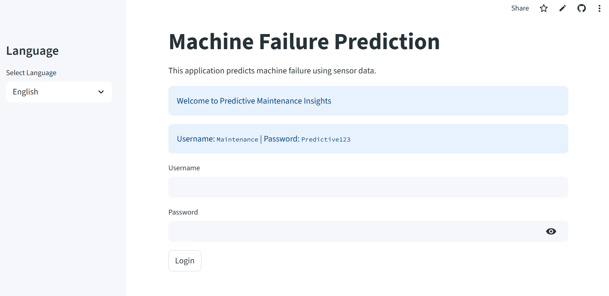

📌 Project Overview
This application represents a paradigm shift in industrial maintenance strategies. By leveraging advanced machine learning algorithms, the system predicts equipment failures with 98.6% accuracy, transforming reactive maintenance into proactive intervention.

Interactive dashboard showing machine health status and failure predictions
Core Value Proposition
The Machine Failure Predictor addresses critical pain points in industrial operations:
- Unplanned Downtime: Average mining operation loses $180,000 per hour during unplanned outages
- Maintenance Costs: Reactive maintenance costs 3-5 times more than planned maintenance
- Safety Risks: Equipment failures account for 23% of mining industry accidents
View Live Application
Technical Details
Business Impact & Strategic Value
- Cost Reduction: 30% decrease in maintenance costs through optimized scheduling
- Productivity: 25% improvement in equipment availability and utilization
- Safety: 40% reduction in equipment-related incidents through early detection
- Inventory: 20% reduction in spare parts inventory through better planning